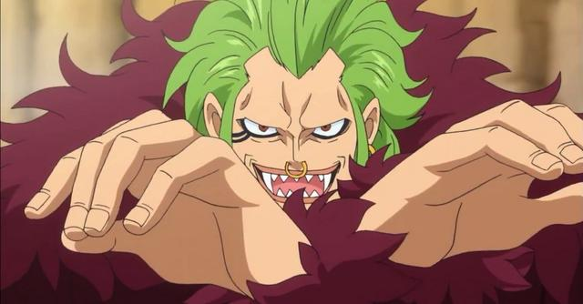

德雷丝罗萨篇（漫画：700－）(漫画：654-699话/动画：579-话)
托拉法尔加·罗得知唐吉诃德·多弗拉门戈宣布辞去王下七武海消息后再度与其联系，确定交还凯萨的地点，之后锦卫门向大伙讲述关于自身发生的一些事故，草帽一伙便决定帮助锦卫门拯救同胞。在新世界海军本部方面，正针对王下七武海之职缺进行商讨，另一方面，手上握有重生的烧烧果实的唐吉诃德·多弗拉门戈正等待着草帽一伙的到来，草帽一伙同时顺利到达德雷丝罗萨。路飞在大伙上岸瞬间企图与桃之助一同潜入岛上，但却遭桃之助拒绝并大打出手，锦卫门见状出言制止桃之助，之后开始商讨潜入岛上之作战。后决定分别由托拉法尔加·罗、罗宾及撒谎布负责押送凯萨入岛，而奈美、乔巴及布鲁克带着桃之助留下守护千里阳光号，而路飞、佐罗、山智、弗兰克及锦卫门却擅自率先进入岛上，发现岛上城镇的镇民全都与会动的布娃娃共存。之后便决定改装进入镇上搜查情报，却遇上了一位拥有神奇战斗力的神秘盲眼大叔，佐罗等人见状推测对方为恶魔果实的能力者，路飞便向大叔询问身分。但对方却选择离去，在此同时佐罗惊觉身上的名刀秋水遭窃，但很快以见闻色霸气掌握小偷的位置，弗兰克此时带着路飞找上被盲眼大叔击败的骗徒逼问唐吉诃德·多弗拉门戈的下落。接着准备朝镇上的斗牛角斗场前进，并得知此地正在举行争夺烧烧果实的格斗大赛。
路飞为不让烧烧果实落入他人手中决定立即赶往斗牛角斗场，另一方面，山智因见到美丽的舞娘深深着迷而与佐罗失散，并因对方突然的投怀送抱而造成失血。名为维奥莱特的舞娘突然拜托山智帮其刺杀某个对象，路飞与弗兰克此时到达斗牛角斗场报名格斗大赛，之后顺利进入参赛，并在一进入便展现出力量威吓众参赛者。斗牛角斗场的管理者正要以扰乱秩序为理由取消路飞的参赛资格时，称为青椒家族的参赛者突然出面声援路飞，路飞感觉参赛的选手各有其特色的风格，在此同时各国参赛者陆续到齐。格斗大赛便随即展开，路飞进入准备室挑选铠甲重装为随身武器，一位名为卡文迪许的参赛者出言相劝告知格斗武装的重量限制，路飞无意间向对方透露真实身分。但因登录参赛名称不同而不被相信，卡文迪许表示将尽全力夺下大赛优胜，路飞却不为所动，之后从名为蕾贝卡的剑斗士参赛者口中得知关于斗牛角斗场当中一位传奇斗士的故事。蕾贝卡并向路飞透露将在取得烧烧果实后全力刺杀唐吉诃德·多弗拉门戈，此时斗牛角斗场决斗出现第一场胜负，路飞意外发现获胜者竟是黑胡子海贼团一号船船长巴吉斯。
弗兰克在得知获胜者身分后前去执行路飞托付的任务，这时斗牛角斗场的士兵玩偶却向其提出共同行动的要求，在斗牛角斗场休息室中，海军本部中将梅纳德正在与本部联系当中，在斗牛角斗场外围当中。之前与路飞相遇的海军本部大将藤虎正准备前往格林比得，另一方面，托拉法尔加·罗率领的凯萨押送小队正向当地居民询问关于格林比得的情报，并意外发现世界政府直属秘密间谍机关“CP0”的出现。而佐罗在此时取回秋水却意外受伤，锦卫门同时遭到唐吉轲德家族的围捕，而留在千里阳光号上的保卫小队遭遇不速之客，而在斗牛角斗场当中，一位称为巴托诺米奥的嗜血参赛者即将出场。巴托诺米奥一出场便以激进言论与斗牛角斗场观众对立，在休息室方面，曾经败在路飞手下的“鬣狗”贝拉密一眼认出路飞的真面目，并表示会全力追上唐吉诃德·多弗拉门戈的脚步后上场比赛。斗牛角斗场第二阶段的比赛也随之展开，场中同时出现一个具有众多强力同伙的团队。率领此团队选手的主谋为来自普罗天斯王国的军师达伽玛，目的是为了让王国国王艾利哲贝罗二世顺利过关。贝拉密同时质问帮助此战斗团队的德雷丝罗萨自卫队队长坦克.利潘德，双方立即展开激战，部分遭到波及的选手掉入竞技场外的海中遭到小斗鱼群的吞噬，战斗持续的进行当中。在观众席位置当中，青椒家族首领向路飞询问卡普的近况，便让路飞再度无意间透露自己的真实身分。
卡文迪许在得知路飞身分后意图向其挑战，青椒首领并突然对路飞发动攻击，卡文迪许意图揭穿路飞的真面目时遭到青椒首领袭击便与其激战，路飞趁隙攻击青椒首领却无奏效。青椒首领意图全力攻击之时遭到同伙制止，路飞便趁机脱逃，此时在场上的对决方面，巴托诺米奥正逐渐展现出真正的实力。场上逐渐形成大混战，达伽玛在此时遭到击败，贝拉密在与巴托诺米奥的对决当中随之败阵，这时普罗天斯王国国王艾利哲贝罗二世发动强力绝招重创场上参赛者。但却随即遭到巴托诺米奥打败，巴托诺米奥便取得晋级资格，在斗牛角斗场外围当中，与弗兰克共同行动的士兵娃娃正向其透露关于德雷丝罗萨的秘密。

路飞在贝拉米遭到淘汰之时前去慰问，而在一旁的巴托诺米奥无意间得知路飞的真实身分，在凯萨押送小队方面，正准备通过连接德雷丝罗萨本岛与格林比特之间的桥梁时遭到凶猛斗鱼攻击。托拉法尔加·罗便以凯萨的心脏做为要胁要求陪同战斗，在即将遭到斗鱼攻击之时突遇解救，但却搜寻不到对方踪迹，便运用凯萨能力到达格林比得。赫然发现岛上的巨大植物，同时瞧见搁浅在海滩的海军军舰后进入森林，便突然察觉海军成员遭到奇特生物小人攻击的情况。
罗宾在遭到攻击的昏厥当中醒来，赫然发现自身遭到小人的捆绑而动弹不得，原因则是先前企图向小人询问岛上状况时遭到麻醉昏迷，经询问过后得知自身处于格林比得地底下的小人国度。发现该国国民拥有单纯的心思，并顺利与该国国王甘乔会面，却在意图离开之时遭到拦阻，在海港镇位置当中。佐罗正与偷盗秋水的小人共同行动，并得知唐吉轲德家族企图攻击千里阳光号之事而赶往救援，转到斗牛角斗场当中，蕾贝卡在此时遇上单脚士兵娃娃与共同行动的弗兰克。在一阵交谈之后分离，在格林比得方面，托拉法尔加·罗正准备移交凯萨之时收到山智的讯息，赫然得知唐吉诃德·多弗拉门戈假意退出王下七武海之骗局，此时危机正一步步接近当中。
时间稍往前回溯，之前与山治相遇的紫罗兰实为唐吉诃德家族的杀手，在其意图诛杀山治之时受到劝诫，便决定告知事实真相。回到格林比特现场，托拉法尔加·罗与罗宾决定分别脱逃，而后唐吉诃德·多弗拉门戈与藤虎率领的海军部队同时抵达现场，同时在斗牛角斗场当中。路飞正准备上场参赛，而唐吉诃德·多弗拉门戈决定对托拉法尔加·罗进行制裁。
托拉法尔加·罗因唐吉诃德·多弗拉门戈的欺骗宣布取消交易，而唐吉诃德·多弗拉门戈则对初次见面的藤虎一番赞扬，并询问海军对于托拉法尔加·罗的处分决策，藤虎表示如草帽一伙成为托拉法尔加·罗之手下便可免于处分。但托拉法尔加·罗立即声明同盟之关系，便立刻遭到藤虎以陨石能力攻击而使出能力阻挡，双方在一瞬间爆发激战后突然平息，转到德雷丝罗萨本岛。弗朗奇在赶往工厂途中与山智通话，同时从大屏幕中瞧见路飞的参赛情形，山智并从维奥莱特手中获得工厂地图，紫罗兰便在锦卫门赶到时离去。在格林比得地下方面，乌索普在得知关于格林比得故事之后突然受托希望其帮助消灭唐吉轲德家族的请求后而目瞪口呆。
而在千里阳光号上方面，娜美等人正与唐吉轲德家族成员乔拉对峙。并决定将对方带离千里阳光号以利战斗，但立即遭到特殊能力攻击，在斗牛角斗场方面，贝拉密收到唐吉诃德·多弗拉门戈的命令要求诛杀路飞。而在观众席中，卡文迪许与巴托诺米奥互相表明欲向路飞挑战的决心，在场上战斗方面，路飞对上了有海贼佣兵身分的战士海尔丁。被突袭一击倒地后站起，立即以一击将其击倒在地而震惊全场。
路飞击败海尔丁后将其抬出场外，陷入昏迷的海尔丁遭到名为艾迪欧的选手击飞，对决持续进行，由青椒首领率领的家族展开全力进击打倒众多高手。却被称为掠夺者吉恩的参赛者挑衅，而杀手集团范库兄弟则以残暴的力量令对手屈服，并对挑衅的对手施以重击，而此时掠夺者吉恩企图揭发路飞的真面目。青椒首领见状上前攻击，而路飞便决定正面迎战。范库兄弟此时施展特殊能力令全场惊讶，并与青椒家族展开激战。此时掠夺者吉恩对路飞发动攻击，却屡遭路飞以见闻色霸气闪躲，后立即遭到青椒首领重击败阵，路飞便接受青椒首领挑战展开对决。双方以霸王色与武装色霸气正面对决，瞬间波及众参赛者仅剩两人对峙。
青椒首领对于路飞的强大霸气颇感诧异，后得知传授路飞霸气运用者是雷利而吃惊。并在对战中提起自身与卡普之间的往事时嚎啕大哭，并向路飞强调卡普的罪行，路飞却不为所动，双方交战持续进行。而在斗牛角斗场外围方面，海军本部中将巴斯提尤正准备捉拿从斗牛角斗场离开的参赛者，却不见失败者的踪影，另一方面。弗兰克在赶往工厂途中向士兵娃娃询问关于玩具制造者的身分，却突然瞧见玩具的暴动，此后意外得知玩偶原是由人类遭到唐吉诃德·多弗拉门戈手下的恶魔果实能力者的能力攻击所形成，同时顺利到达工厂。在格林比得方面，托拉法尔加·罗试图与奈美联系却未获回应，格林比得地下当中，撒谎布向小人询问关于小人国度与唐吉诃德·多弗拉门戈战争之原因。得知小人目的为拯救王国的公主，并从其口中赫然得知工厂所在地竟位于斗牛角斗场之地底当中。
小人国民整装过后准备带着撒谎布与罗宾前往斗牛角斗场拯救同伴，另一方面，弗兰克在士兵娃娃带领下来到小人族军团的总部，发现佐罗也在小人带领下到达。之后便与小人们商讨作战策略，在千里阳光号方面，奈美等人与乔拉持续对峙，同时收到托拉法尔加·罗的通讯。要求将千里阳光号尽速驶向格林比得，后立即切断通讯，唐吉诃德·多弗拉门戈便告知托拉法尔加·罗路飞正在斗牛角斗场参赛的消息，在斗牛角斗场对决当中。路飞在与青椒首领对决渐占上风，战斗进入白热化阶段。青椒首领遭到路飞重击后站起，并表示新时代除了“黑胡子”之外的新人都属于弱者，并于再次受到路飞攻击之时施展绝技，并回忆起过去自身与卡普之间的战斗过程。路飞在此时准备施展强力招式进攻，并在激战过后取得了胜利，而巴吉斯则在此同时发现了路飞的身分。
路飞在退场前往观众席之时突然遭到卡文迪许正面攻击，休息室之部分选手提出藐视路飞的言论，立即遭到巴托诺米奥攻击。巴托诺米奥并表示对路飞的崇拜之意，正当路飞与卡文迪许僵持之时，青椒首领前来向路飞表达感谢之意，路飞却趁乱逃脱。并受到蕾贝卡的引路脱逃，而正与黑胡子联系的巴吉斯将电话虫交予路飞，路飞表示将全力守护烧烧果实，后与蕾贝卡抵达剑斗士的牢房休息。却突然遭到囚犯攻击，以自身能力脱身后制服住蕾贝卡，后从其与囚犯口中得知关于德雷丝罗萨的黑暗及相关故事。
蕾贝卡在向路飞短暂讲述关于自身的一些故事后上场参赛，同时回忆起童年所遭遇过的事件及与士兵娃娃间的情谊，对于士兵娃娃的照顾极为感激，却在上场参赛之时遭斗牛角斗场观众群起谩骂，在场边观赛的路飞盛怒之时从囚犯口中得知原来蕾贝卡乃倍遭唾弃的德雷丝罗萨前任国王之孙女。路飞对于观众迁怒之行为极为不满，此时卡文迪许出言喝斥观众的谩骂行为，路飞对其之行为大力激赏。观众一瞬间见风转舵转而声援卡文迪许，对战便随即展开，在小人军团总部方面，正准备挥军发动攻势。转到海港镇中，索隆与山智及锦卫门会合之时，紫罗兰随即现身告之千里阳光号遭夺的消息，在千里阳光号上。乔拉挟持娜美等人前往格林比特，但遭布鲁克施计打败，格林比得方面，托拉法尔加·罗遭到唐吉诃德·多弗拉门戈及藤虎联手击败之时，从其口中听闻关于唐吉轲德家族与世界政府之关联。
转到斗牛角斗场之外，索隆与山智商讨过后让其前去拯救娜美等人，之后与锦卫门商讨接下来的行动策略。巴托罗米奥此时因见到索隆本人而惊讶不已，转到德雷丝罗萨王宫之中，BABY5正与唐吉诃德·多弗拉门戈之手下古拉迪乌斯商讨关于紫罗兰背叛之处置，在山智方面。紫罗兰告知千里阳光号遭到雷击，山智立即忆测出情况，千里阳光号上，娜美等人在前往格林比得当中得知唐吉诃德·多弗拉门戈的骗局。再转到格林比得，凯萨向唐吉诃德·多弗拉门戈追讨心脏，却遭托拉法尔加·罗否定，并再度遭其挟持逃亡。这时千里阳光号到达格林比得遭斗鱼群攻击，托拉法尔加·罗企图引诱唐吉诃德·多弗拉门戈离开千里阳光号时遭其识破，正当唐吉诃德·多弗拉门戈发动攻击之际，山智便在此时及时赶到。
山智随后便对唐吉诃德·多弗拉门戈发动攻击，但都被躲过，后来山智被控制，无法动弹，唐吉诃德·多弗拉门戈要给予最后一击时，罗用能力救下山智，要山智等人前往卓武，自己则是留下来和唐吉诃德·多弗拉门戈交战，这时藤虎使用能力，用陨石攻击千里阳光号，但被罗用能力挡下，之后罗用乔拉把唐吉诃德·多弗拉门戈引到桥上，准备和唐吉诃德·多弗拉门戈决一死战。
唐吉诃德·多弗拉门戈击败托拉法尔加·罗后向国民供称其意图篡夺王位，索隆与锦卫门见状上前搭救，索隆向唐吉诃德·多弗拉门戈发动攻击时遭藤虎阻挡，并遭其能力攻击坠入地底。唐吉诃德·多弗拉门戈趁隙攻击锦卫门，路飞企图冲出营救遭海楼石夺取力量，索隆一瞬间使出招式逃脱，而草帽一伙其他成员听闻现场状况顿时错愕。而此时唐吉诃德·多弗拉门戈与藤虎带着昏迷的托拉法尔加·罗前往王宫，索隆与锦卫门见状立即逃逸，而在千里阳光号方面，BIG MAM海贼团突然现身。意图夺取凯萨，草帽一伙便准备集结，路飞吩咐娜美等人将千里阳光号先行驶向卓武，香吉便决定发动反击逃亡，路飞此时决定启程前往王宫正面挑战唐吉诃德·多弗拉门戈。
在斗牛角斗场方面，巴托罗米奥阻挡在贝拉密与企图将其杀害的德林杰面前，德林杰见状赶去执行唐吉诃德·多弗拉门戈的其它任务。贝拉密绝望之余询问巴托罗米奥向其救助的原因，巴托罗米奥表示已将其视为战友，在小人国军总部当中，士兵娃娃向大伙说明作战方式。表示将从自身军队挖掘的通道攻向工厂及秘密港口，并强调主要任务将俘虏将居民变成玩偶的恶魔果实能力者，同时告知此人正由唐吉轲德家族最高干部保护，之后正式发动进攻。在路飞方面，正在寻找出口的同时遇上贝拉密与巴托罗米奥，却得知斗牛角斗场的出口已遭封闭，贝拉密表示愿在不背叛唐吉诃德·多弗拉门戈的情况下为其带路。路飞则为烧烧果实的归属感到苦闷，巴托罗米奥表示将在获胜之后将烧烧果实交予路飞，在场上对决方面，蕾贝卡受到救助持续打倒众高手。这时一位人物出现在路飞面前使其痛哭流涕，路飞后与索隆等人会合前往王宫，转到斗牛角斗场外围，革命军成员克尔拉正与人连系中，路飞也在赶往王宫时对索隆等人讲述此人的身分。
小人军团准备从总部出发攻向工厂，弗朗奇却因为身体巨大被迫改道前往玩具之家发动攻势，唐吉轲德海贼团干部塞尼奥尔正面迎战，双方爆发激战的同时。唐吉轲德海贼团其他成员皆收到消息，在通道方面，士兵娃娃接受到讯息颇为紧张，并向乌索普表示唐吉轲德格斗集团将迎战弗朗奇。后针对唐吉轲德家族成员稍作说明，不久后顺利进入地下交易港，并且发现巨大的工厂规模。
在斗牛角斗场对决方面。蕾贝卡与为祖国而战的战士斯莱曼对决，并强调自身的信念，场上战斗持续进行，转到地下交易港。小人军团在士兵娃娃前往王宫后将指挥权交予乌索普，却遭到港口管理者盘问，立即使出计策脱逃，小人军团强大的攻击力令乌索普与罗宾大吃一惊。一行人朝向干部塔前进，而士兵娃娃在得知弗兰奇的消息后展开抢夺升降梯通道的计划，以自身速度优势牵制对方同时回忆起与蕾贝卡的往事，并在敌方提问时强调欲替利库王家夺回政权的决心。转回斗牛角斗场当中，在一阵惨烈的战斗过后，最后由蕾贝卡取得晋级决赛的资格，斗牛角斗场观众见状群起激愤。蕾贝卡回忆卡文迪许在场上施展强力绝技令全场参赛者倒地之情形，同时在斗牛角斗场外围，海军本部中将巴斯提尤针对卡文迪许的战斗招式稍做说明，格斗大赛决赛便即将展开。在王宫当中，唐吉诃德·多弗拉门戈与遭绑而来的利库王交谈，并表示已做好万全准备迎战草帽一伙，在路飞等人方面。从随行的小人口中得知前往工厂的方法，并在即将到达王宫时受到紫罗兰协助，全力进攻王宫。
蕾贝卡获胜之后于休息室企图与路飞交谈，但却从反应中识破萨波的身分，2人稍谈过后准备迎接决赛，在王宫玄关方面。紫罗兰将进入王宫的通行证交予路飞等人，正当路飞对其身分疑惑之时，从共同行动的小人话中得知紫罗兰的真实身分，惊讶之余随其进入王宫地下的秘密通道。后利用升降梯进入王宫，转到玩具之家，弗兰克同时面对赛尼奥尔与格斗军团干部马赫.巴伊斯的攻击，后突然遭到海军本部中将巴斯提尤率领部队围捕。在王宫当中，藤虎向唐吉诃德·多弗拉门戈表示在战争中仅负责国民的安全，但不包括保护其的性命，同时宣称双方如欲战斗将建议政府废除王下七武海制度。立即遭唐吉诃德·多弗拉门戈攻击，于是向其力劝在事件结束前应和平共处，转到斗牛角斗场，可亚拉赶抵现场观赏决胜赛。在选手陆续登场后，决胜赛准备展开，此时之前遭淘汰的选手因不满蕾贝卡的获胜资格而上场抗议，却遭到竞技场英雄迪亚曼蒂攻击。并遭到凶猛斗鱼吞噬，后得知大赛奖品烧烧果实捆绑于斗鱼身上，选手必须将其抢夺并取得优胜，决胜赛正式开赛。在王宫底部外墙塔中，路飞瞬间发动攻击闯入内部，唐吉诃德·多弗拉门戈收到汇报大感诧异，转到工厂升降梯中。士兵娃娃正与唐吉轲德海贼团干部拉奥G战斗，转到外墙塔位置，正当路飞等人向内进攻之时，唐吉轲德海贼团最高干部之一琵卡出现拦阻。
琵卡现身便使出能力阻挡路飞等人去路，而在斗牛角斗场大赛当中，巴吉斯以强大攻击波及现场观众，此时捆绑烧烧果实的斗鱼朝蕾贝卡攻击时遭萨波制服。迪亚曼蒂与巴吉斯发动夹击之时，萨波使出武装色霸气与之对抗，在地下交易港中，乌索普正与小人商讨对策。干部塔当中，唐吉轲德海贼团最高干部之一托雷波尔与遭变成玩偶的卡文迪许交谈过后将其劳役，而乌索普正与小人准备对砂糖发动突袭。
拖雷波尔此时使出战力使大伙惊讶。正当小人雷欧展开攻击时遭罗宾制止，在工厂内部中，遭到劳役的小人被管理者言语唬住而满怀感激，而在港口镇中。罗宾利用策略引诱拖雷波尔离开干部塔，小人军团对砂糖进攻时再遭言语唬住，在乌索普命令下发动攻击，砂糖便使出能力迎战。并造成小人军团内哄，且紧急召回拖雷波尔，拖雷波尔企图制止骚动时得知遭到欺骗，便对罗宾发动攻击。罗宾使出能力逃脱。
拖雷波尔此时使出强力招式对小人军团重击造成干部塔瞬间倒塌，并抓住小人雷欧问取口供，小人军团展现不屈饶的意志。便遭到拖雷波尔重击，乌索普见状命令小人脱逃，但雷欧坚持继续完成任务，在升降梯位置。士兵娃娃在与拉奥G对战中居于劣势，并回忆起稍早之前与蕾贝卡的对话，转到斗牛角斗场大赛，蕾贝卡主动向迪亚曼帝挑战却遭重击倒地。萨波见状命巴托罗米奥上前支援，迪亚曼帝便向蕾贝卡提及关于其母斯卡蕾特之死，再转回升降梯中，小人军团全力掩护士兵娃娃前往王宫。乌索普听闻大感诧异，小人军团并提及士兵娃娃的真面目原是斗牛角斗场传奇斗士居鲁士。
路飞等人因受到琵卡能力攻击而紧急逃窜，而索隆面对琵卡的攻击时苦思迎战方法，转到王宫内部，士兵娃娃与小人们遭遇唐吉轲德海贼团干部古拉迪乌斯阻拦。小人们为掩护士兵娃娃前进而遭重击，古拉迪乌斯擒住士兵娃娃意图制裁之时，路飞及时赶到将其拯救，并与紫罗兰带着士兵娃娃撤退。古拉迪乌斯发动强力攻击重击紫罗兰，路飞以最快速度逃出，此时假扮成唐吉诃德·多弗拉门戈的锦卫门出现，并得知堪十郎失踪的消息。另一方面，路飞三人来到王宫大厅等待时机营救托拉法尔加·罗与利库王，在玩具之家方面，弗兰克持续寻找突破口。转到干部塔，遭变成玩偶的罗宾将一切希望托付乌索普，而乌索普在此时发动脱逃战术。
小人此时向撒谎布呼救。并表示对其的信赖与忠诚，特雷波尔指称小人实遭欺骗，小人们对其指控极为愤怒，且遭到特雷波尔虐待。乌索普及时出现制止，并向小人说明自身身分，随即与特雷波尔展开对决，在王宫方面。路飞等人等待时机之时，士兵娃娃回忆起自身及利库王与斗牛角斗场之往事，其后便准备进攻，斗牛角斗场大赛则持续进行中。转到玩具之家，弗兰奇遭到重击倒地，在心中将一切托付于乌索普，在工厂地下交易港中。乌索普遭到特雷波尔与砂糖击败后被迫吞下小人族的糖果后身体发生剧变，砂糖受到惊吓当场昏厥，小人雷欧见状准备发动突袭。砂糖倒下同时使遭到变成玩偶的劳工与德雷丝罗萨所有居民恢复原状，唐吉轲德家族所有成员为之惊讶，小人族对于乌索普的相助之情为之感激，德雷丝罗萨全国居民展开暴动。在路飞等人方面，恢复原状的居鲁士瞬间朝内进攻，一刀砍下唐吉诃德·多弗拉门戈的脑袋，转到斗牛角斗场。蕾贝卡在此时恢复记忆，萨波同时发动强力攻击重击擂台朝地底前进。